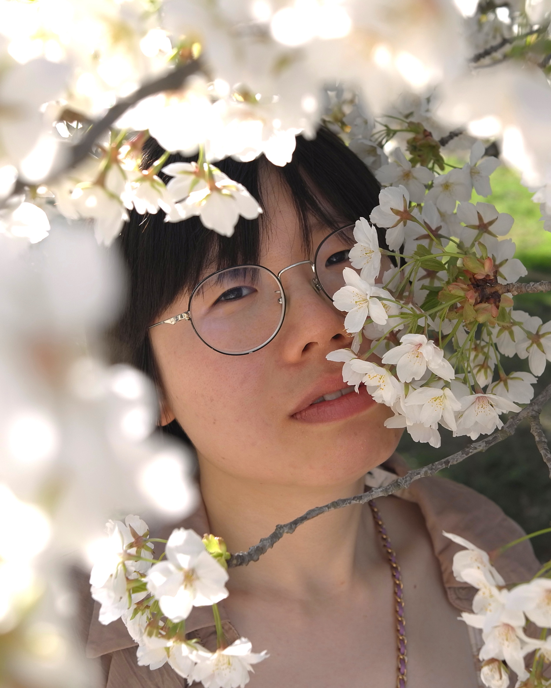
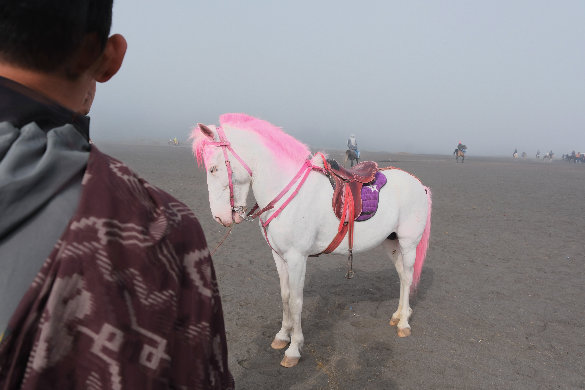
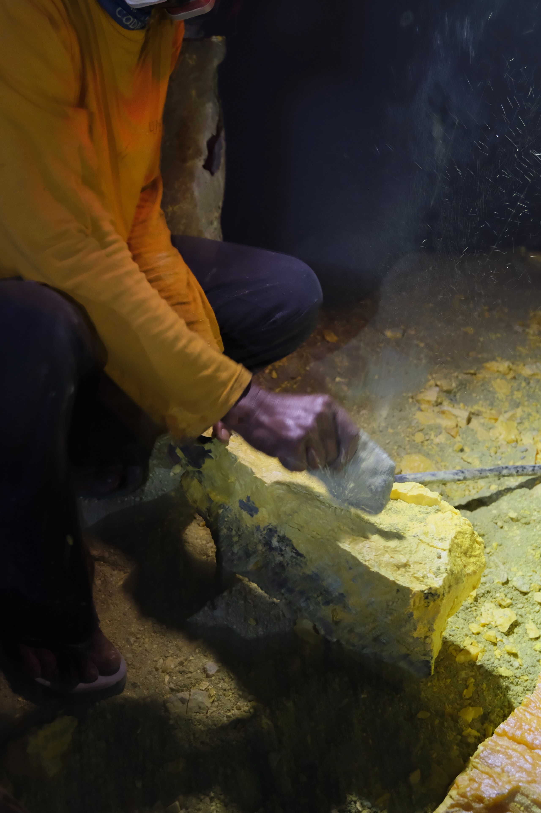
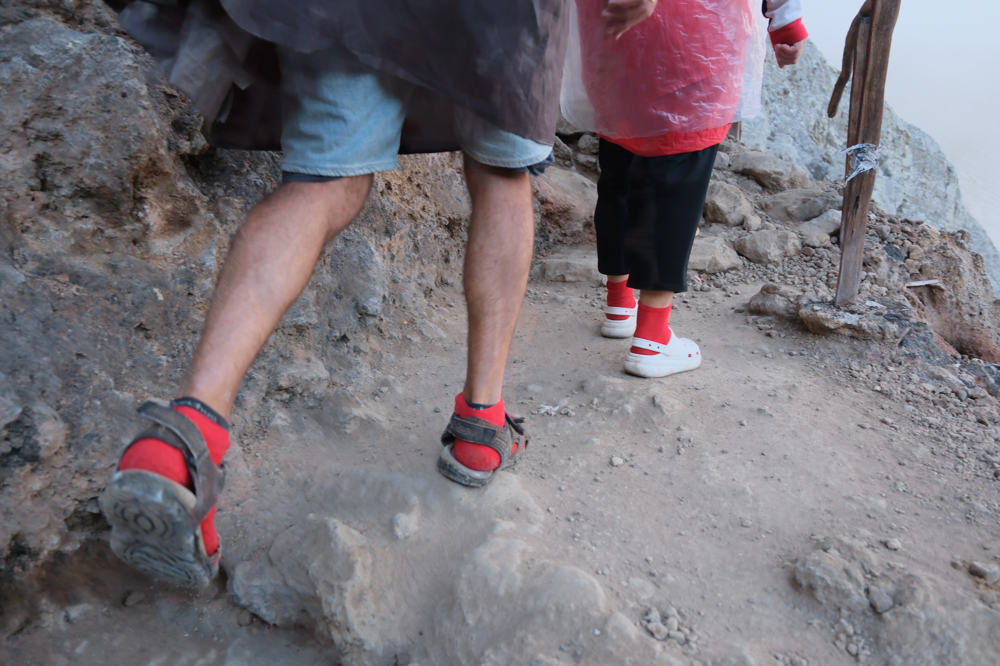
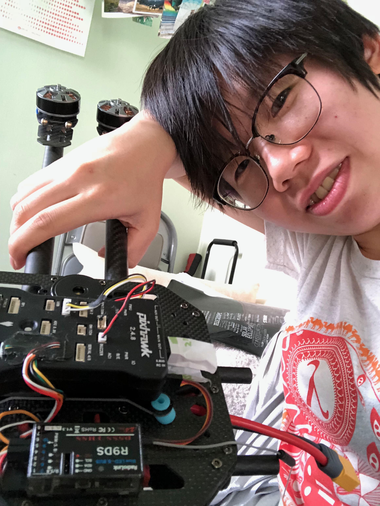
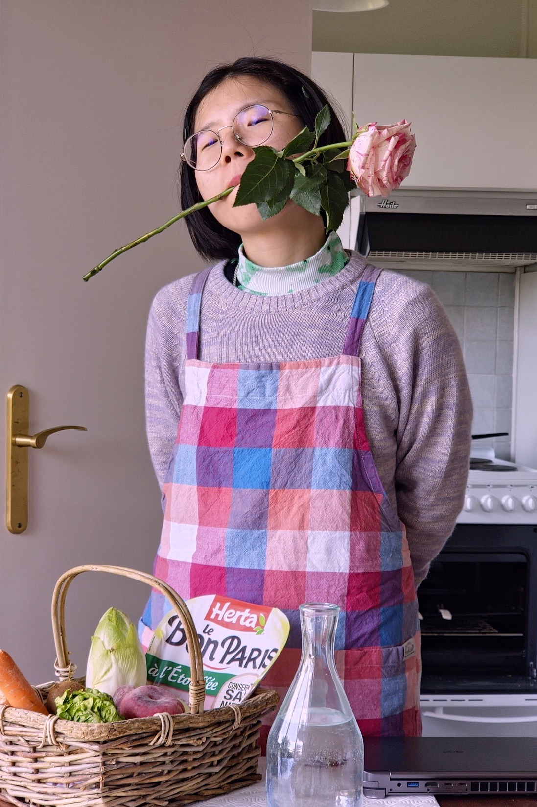
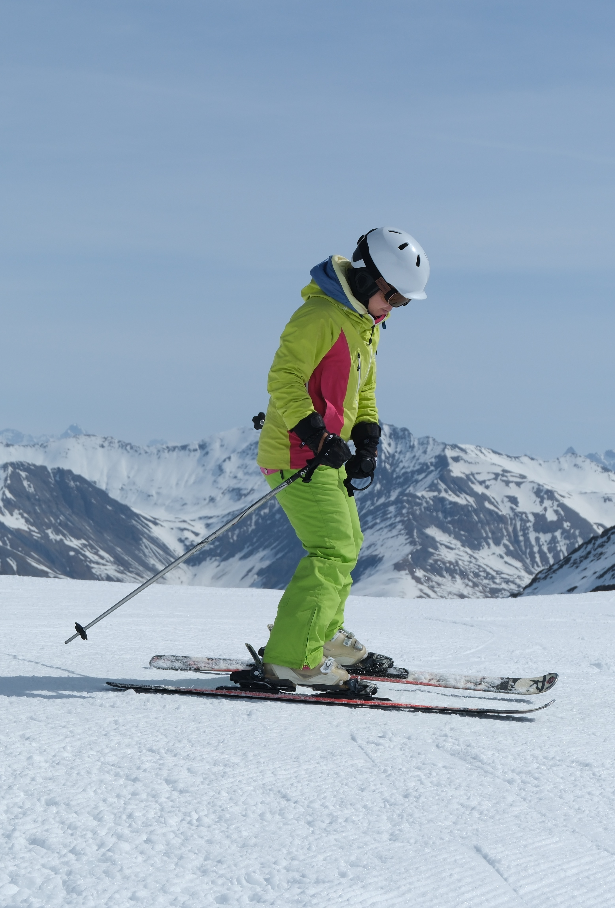
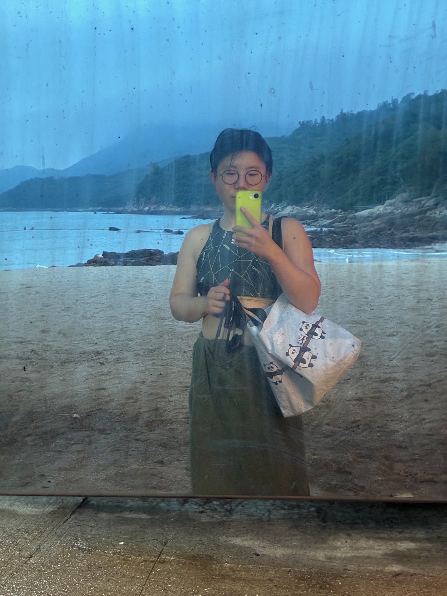

xsnow [at] connect.hku.hk
I do research on type systems of programming languages. From 2017 to 2023, I was in the HKU PL Group, advised by Bruno C. d. S. Oliveira. My thesis is about intersection types, union types, and the merge operator. After that, I was a postdoctoral researcher at IRIF, Paris, under the MathInGreaterParis Fellowship Programme.
I currently work as a functional programmer (Haskell) at Core Strats, Standard Chartered.
Research interests: type theory, subtyping, formal verification

Being connected to human society and to nature is essential for me. I do it with fear and bravery — I write. I taste. I make things with my hands. I have followed light across continents and followed currents into the cold. A drop of it is enough.






